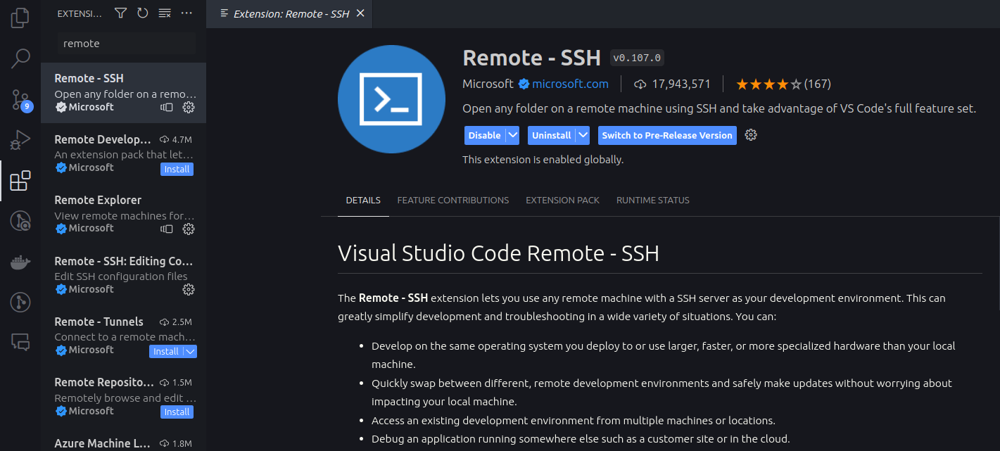
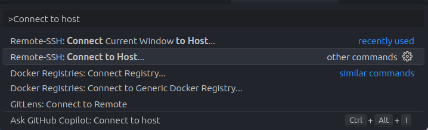

Introduction
After explaining this many times, this guide will show you how to connect VS Code to a remote server through SSH. I’ll try to keep it as short as possible while still explaining what you are doing.
0. Prerequisites
- Have VS Code installed: Download
- Remote - SSH extension: Go to the extensions tab in VS Code (or press “Ctrl+shift+X”) and search for “Remote - SSH”. Click install. 
- Username and password for the remote server. You should have gotten this from your supervisor or administrator.
1. What is SSH?
SSH is a protocol that allows you to connect to a remote server through a secure connection. Usually, you would use SSH to connect a terminal to a remote server to run commands. VS Code, the great tool that it is, allows you to connect to a remote server through SSH and use it as if it was your local machine. This means that you can use VS Code to edit files on a remote server, run commands, and even debug your code.
2. Generate SSH keys
SSH keys are used to authenticate you to the remote server. You can generate SSH keys by running the following command in your terminal:
ssh-keygen -a 100 -t ed25519 -f ~/.ssh/id_ed25519This will generate a public and private key in the ~/.ssh directory. The passphrase is optional, you will have to enter it every time you connect to the remote server. If you don’t want to enter a passphrase, just press enter.
3. Add SSH key to remote server
Now that you have generated your SSH keys, you need to add the public key to the remote server. Either, you have a web interface where you can manually add the public key, or if you only have access to the terminal, you can do the following:
On Linux or Mac
Run the following command in your terminal:
ssh-copy-id -i ~/.ssh/id_ed25519.pub <username>@<hostname>On Windows
I would recommend to ssh into the remote server and add the public key manually. You can find the public key in ~/.ssh/id_ed25519.pub.
Run the following command in your terminal:
ssh <username>@<hostname>Here you will have to input your password. Once you are logged in, run the following command to add the public key to the authorized keys file:
echo "<public key>" >> ~/.ssh/authorized_keys4. Edit SSH config
You can edit the SSH config file to make it easier to connect to the remote server. The SSH config file is located in ~/.ssh/config. We will acces this file through VS Code.
- Open VS Code and press “Ctrl+Shift+P” to open the command palette.
- Search for “Remote-SSH: Open Configuration File…” and press enter.
- Choose the one in your home directory.
- Add the following to the file:
Host <hostname>
HostName <hostname>
User <username>
IdentityFile ~/.ssh/id_ed25519Additional Configuration Options
You can add multiple hosts to the SSH config file. This is useful if you have multiple servers you want to connect to.
If you have to go through a jump host to connect to the remote server, you can add the following to the SSH config file:
Host <hostname> HostName <hostname> User <username> IdentityFile ~/.ssh/id_ed25519 ProxyCommand ssh <jump host username>@<jump host hostname> -W %h:%pIf you have multiple really similar hosts, you can use
%hin the SSH config file.%hwill be replaced with the hostname and%pwill be replaced with the port number. This is useful if you have multiple servers with the same username and SSH key.Host <hostname1> <hostname2> <hostname3> HostName %h ...If you want to push to GitHub through SSH, you can forward your SSH agent to the remote server. This will allow you to push to GitHub without having to add a new SSH key to GitHub. You can do this by adding the following to the SSH config file:
ForwardAgent yesIf you want to look at plots or images on the remote server, you can forward the X11 display to your local machine. This will allow you to open plots and images on the remote server and have them show up on your local machine. You can do this by adding the following to the SSH config file:
ForwardX11 yesThis works as is on Linux and Mac. On Windows, you will have to install an X11 server.
5. Connecting VS Code to a remote server
- Open VS Code and press “Ctrl+Shift+P” to open the command palette.
- Search for “Remote-SSH: Connect to Host…” and press enter. 
- Choose the host you want to connect to.
- Maybe: Enter your password.
- You are now connected to the remote server. If you open a terminal in VS Code, you will see that it is the terminal of the remote server.
- You can now open a folder on the remote server by clicking “File” -> “Open Folder…” and choosing the folder on the remote server or by navigating to the folder in the terminal and running
code .
You are now ready to use VS Code on a remote server!
The rest of this post will be some helpful commands and extensions for VS Code completely unrelated to the topic but that I wanted to write down somewhere.
Helpful Linux commands
ssh <username>@<hostname>: Connect to a remote server through SSH.lsorls <dir>: List files in the current directory.ls -a: List all files, including hidden files and directories. (for example.ssh)
cd <dir>: Change directory.~: Home directory.pwd: Print working directory.cat <file>: Print the contents of a file.which <command>: Show the path which will be executed when you run a command.setfacl -m u:<username>:rwx <dir>: Give a user read, write and execute permissions to a directory.- In the terminal press
Ctrl+Rto search through your command history.
Helpful VS Code commands
This will become a future blog post probably.
I try to apply the rule: “If you do something by hand, you are probably doing it wrong.” This has saved me a lot of time when I do repetitive tasks.
General:
Ctrl+Shift+P: Open the command palette.- From here you can search for commands and see the keyboard shortcuts.
Ctrl+P: Open the file search.Ctrl+P->:<line number>: Go to a specific line in the file.
Ctrl+Shift+F: Search through the contents of all files in the current folder.
Window management:
Ctrl+Shift+N: Open a new window.Ctrl+T: Open a new tab.Ctrl+Shift+T: Reopen last closed tab.Ctrl+J: Toggle the terminal panel.
Text editing:
Ctrl+D: Select the next occurrence of the current selection.Ctrl+Shift+L: Select all occurrences of the current selection.Ctrl+Shift+K: Delete the current line.Ctrl+Shift+Enter: Insert a new line above the current line.- Mark multiple lines and
Toggle line commentto comment multiple lines. (I changed the keyboard shortcut toCtrl+#)
If you have a path in the terminal, you can click on it to open the file in VS Code. This is useful if you get an error.
Helpful VS Code extensions
- Remote - SSH: Connect to a remote server through SSH.
- GitHub Copilot: Free for students, use AI to help you write code. After some learning curve it speeds up your workflow a lot.
- GitLens: Improves the Git integration in VS Code.
- Multiple cursor case preserve: When you use multiple cursors to change a word that has different cases, it will preserve the case of the word.
- Terminal Here: Open a terminal in the folder of the current file. Very useful if you are working on a project with deep folder structures.
- Error Lens: Show errors and warnings inline in the editor so you don’t have to hover over the error.